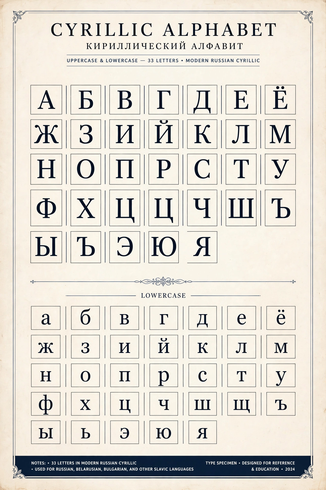

Cyrillic script

| Cyrillic script | |
| Type | Alphabet (with featural elements in some letters) |
|---|---|
| Created | Late 9th–early 10th century, First Bulgarian Empire |
| Parent | Greek uncial script, with Glagolitic borrowings |
| Used for | Russian, Ukrainian, Bulgarian, Serbian, Mongolian (historically), many languages of Eurasia |
The Cyrillic script is a writing system used for over 250 million people across Eurasia. It was developed in the First Bulgarian Empire in the late 9th or early 10th century, at the Preslav Literary School, and is named in honour of Saints Cyril and Methodius, the Byzantine missionaries who had earlier devised the Glagolitic alphabet for the Slavs.
Development
Cyrillic is based mainly on the Greek uncial hand, supplemented with letters taken from Glagolitic for sounds Greek lacked, such as ж, ц, ч, ш, щ, and the vowels ъ, ы, ь, and ю. The early alphabet had more than 40 letters; national reforms pruned and added letters as the script was adapted to different languages. Peter the Great's civil type reform of 1708–1710 modernised Russian letterforms, and the 1918 reform eliminated the letters Ѣ, Ѳ, І, and the final hard sign.
Modern use
Cyrillic is the official script of Russia, Ukraine, Belarus, Bulgaria, Serbia, North Macedonia, Montenegro, Bosnia and Herzegovina (co-official), Kazakhstan, Kyrgyzstan, Tajikistan, and Mongolia (alongside the traditional Mongolian script, being restored to wider use). National versions differ: Russian has 33 letters, Ukrainian 33 (including ґ and ї), Serbian 30, and Bulgarian 30.
Spread and adaptation
Under the Soviet Union, Cyrillic was extended to dozens of non-Slavic languages, from Tatar and Uzbek to Yakut and Chukchi, many of which adopted extra letters with hooks and descenders. After 1991 several states — Azerbaijan, Turkmenistan, and Uzbekistan among them — shifted to Latin alphabets, while Kazakhstan began a phased Latin transition. Like the Etruscan-derived Latin alphabet, Cyrillic demonstrates how a single script family can be repeatedly reshaped for new languages.